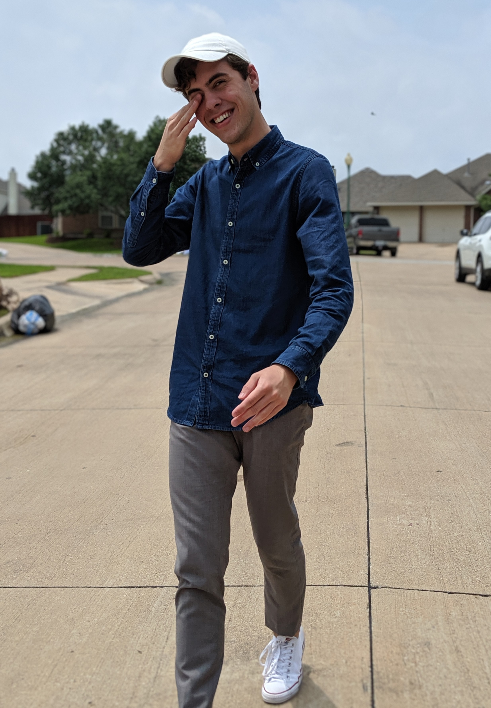

Hello, my name is Parker Wiley and I’m a Professional and Technical Communication student at the University of North Texas in Denton, TX. I spend most of my free time writing about and researching technology, playing the trumpet, and cooking. I’m extremely passionate about technology and the impact that it can have on people, and am constantly educating myself on it. I seek to help others understand technology and what it’s capable of.
